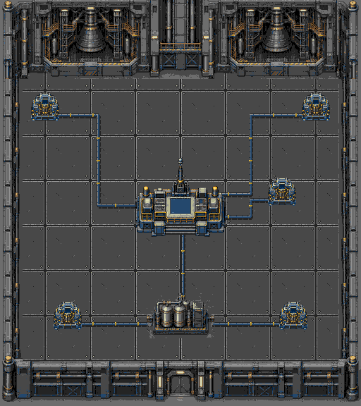

PLAGUEFALL / FASE 14 / REVISÃO LOCAL
Estaleiro em peças independentes
Motores no topo, porta na base e console como prop central. Cinco estações de energia interligadas à bateria e ao console, com curvas, uniões e terminais. Geradores novos de48×48pixels, seis estados na paleta do cenário. Mapa512×576; detalhe nativo de1pixel.
Cada estação exige10segundos próximos ao painel sem atirar. Ao se afastar, perde1segundo de progresso a cada segundo completo (10%). Barras individuais permanecem sobre estações com progresso; voltar retoma o restante, pausar congela os relógios e estações ligadas permanecem ligadas.
Piso de placas de ferro64×64com quatro rebites nos cantos, juntas contínuas e detalhe nativo de1pixel. O módulo se repete sob os conduítes e equipamentos.
Geometria e memória · Validação e ROM · Documentação · Prompt do piso (ImageGen integrado) · Prompt dos geradores · Prompt do console
Composição completa

Montagem do exportador: conexões completas e cinco geradores nativos48×48. Não é captura do emulador.Peças e limitadores
Câmeras reais NTSC
 Ativação: progresso de10segundos
Ativação: progresso de10segundos Progresso reduz durante o afastamento
Progresso reduz durante o afastamento Estações com barras independentes
Estações com barras independentes Topo
Topo Prop central
Prop central Base
Base Carga em movimento
Carga em movimento Pausa
Pausa Cinco geradores concluídos
Cinco geradores concluídosVerificação
28câmeras e seis estados48×48: pixels exatos emVRAM e zero falhas de cache. Ativação somente na atualização600/500(NTSC/PAL), redução somente após60/50atualizações afastado, limite zero, retomada, relógios independentes, pausa e persistência de estações ligadas verificados. Piso, cinco geradores por controle, colisões, resultados e regressões15/16 passaramNTSC/PAL.
| Região | Carga artificial | Falhas de cache | Relatório |
|---|
| NTSC | 57.3 FPS | 0 | Abrir |
| PAL | 49.5 FPS | 0 | Abrir |
Carga de20s: quatro inimigos e4+4tiros, com vida protegida e projéteis inativos repostos porRAM. Hardware físico e dificuldade humana não certificados.
Cache480 + geradores53 + barras20 =553/640tiles; pico conservador472. Fonte1190tiles naROM; nenhuma substituição aproximada. ROM SHA256: f84b9b50815ca381b9b72dbef173fc6279672fa9736f5064874f9b56ba39a597.